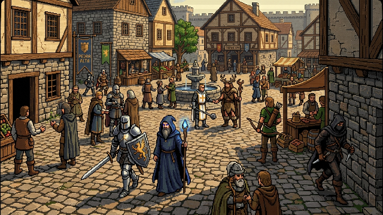

1. A Cidade Cheia de Jogadores
A vida urbana em Pedra Alta: classes convivendo com seus equipamentos canônicos

O que a cena mostra: A praça central de Pedra Alta densamente povoada por jogadores de diversas classes (Guerreiro em armadura de placas completa e escudo heráldico, Mago de túnica azulada e cajado luminoso, Clérigo em sobreveste com cruz sagrada e maça, Arqueiro com arco recurvo e aljava nas costas, Ladino espreitando nas sombras, Druida com adereços de chifre e peles rústicas). A praça reúne barracas de mercado, poço central, taverna e ferraria sob a escarpa rochosa.
✓ DECIDIDO (DESIGN.md)
- Pedra Alta é o povoado inicial e praça principal de convivência e início da jornada (DESIGN.md linhas 699-701, 1456).
- Arquitetura em tabuado de madeira, calçamento de lajotas e pedra para pescadores e artesãos da ilha (DESIGN.md linhas 380-412).
- O jogo não possui classe fixa fechada: as classes são "receitas" de nós comprados no disco e equipamento vestido (DESIGN.md linhas 94-97).
- As roupas e cosméticos são compostos por peças intercambiáveis (corpo, armadura, elmo, capa, armas) sem alterar a base humana (DESIGN.md linhas 871-874, 945-946).
? PROPOSTA (PLANEJAMENTO.md — por decidir)
- Densidade máxima de jogadores visíveis na praça antes de ativar instanciamento ou sharding (PLANEJAMENTO.md, por decidir).
- Sistema de comércio direto entre jogadores (trade window manual na rua) versus balcão consignado no armazém de Tobias (PLANEJAMENTO.md, por decidir).
- Canal de voz posicional de proximidade nas tavernas e praças.